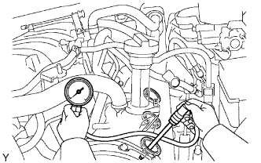

ENGINE > ON-VEHICLE INSPECTION |
| 1. INSPECT IGNITION TIMING |
Warm up and stop the engine.
Allow the engine to warm up to a normal operating temperature.
When using the intelligent tester:
Connect the intelligent tester to the DLC3.
Start the engine and idle it.
Push the intelligent tester main switch ON.
Enter the following menus: Powertrain / Engine and ECT / Data List / Primary / IGN Advance.
Disconnect the intelligent tester from the DLC3.
 |
When not using the intelligent tester:
Remove the 2 nuts and V-bank cover.
Connect the tester probe of a timing light to the wire of the ignition coil connector for the No. 1 cylinder.
 |
Using SST, connect terminals 13 (TC) and 4 (CG) of the DLC3.
 |
Using the timing light, check the ignition timing.
Remove SST from the DLC3.
Disconnect the timing light from the engine.
Install the V-bank cover with the 2 nuts.
| 2. INSPECT ENGINE IDLE SPEED |
Warm up and stop the engine.
Allow the engine to warm up to a normal operating temperature.
When using the intelligent tester:
Connect the intelligent tester to the DLC3.
Race the engine at 2500 rpm for approximately 90 seconds.
Push the intelligent tester main switch ON.
Enter the following menus: Powertrain / Engine and ECT / Data List / Primary / Engine Speed.
Disconnect the intelligent tester from the DLC3.
 |
When not using the intelligent tester:
Using SST, connect a tachometer probe to terminal 9 (TAC) of the DLC3.
Race the engine at 2500 rpm for approximately 90 seconds.
Check the idle speed.
Disconnect the tachometer from the DLC3.
| 3. INSPECT COMPRESSION |
Warm up and stop the engine.
Allow the engine to warm up to a normal operating temperature.
Check for DTCs (Click here).
Remove the 2 nuts and V-bank cover.
Remove the air cleaner hose assembly.
Disconnect the 8 injector connectors and 8 ignition coil connectors.
Remove the 8 bolts and 8 ignition coils.
Remove the 8 spark plugs.
 |
Check the cylinder compression pressure.
Insert a compression gauge into the spark plug hole.
Fully open the throttle.
While cranking the engine, measure the compression pressure.
If the cylinder compression is low in one or more cylinders, pour a small amount of engine oil into the cylinder with low compression through its spark plug hole. Then inspect the cylinder compression pressure again.
Install the 8 spark plugs.
Install the 8 ignition coils with the 8 bolts.
Connect the 8 injector connectors and 8 ignition coil connectors.
Install the air cleaner hose assembly.
Install the V-bank cover with the 2 nuts.
Clear the DTCs (Click here).
| 4. INSPECT CO/HC |
Warm up the engine.
Keep the engine speed at 2500 rpm for approximately 180 seconds.
 |
Insert the CO/HC meter testing probe at least 40 cm (1.31 ft.) into the tailpipe during idling.
Immediately check CO/HC concentration at idle and/or 2500 rpm.
If the CO/HC concentration does not comply with regulations, troubleshoot in the order given below.
Check the A/F sensor (Click here) and heated oxygen sensor (Click here) operation.
See the table below for possible causes, and then inspect and correct the applicable causes if necessary.
| CO | HC | Symptom | Cause |
| Normal | High | Rough idle |
|
| Low | High | Rough idle (Fluctuating HC reading) |
|
| High | High | Rough idle (Black smoke from exhaust) |
|